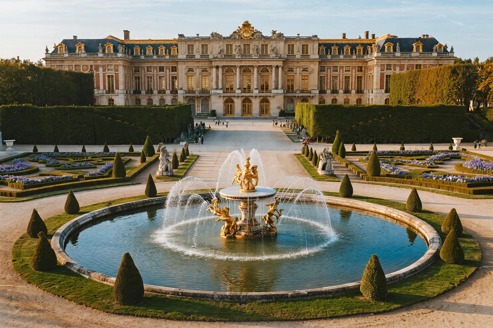

Palace of Versailles
| Palace of Versailles | |
|---|---|
| Location | Versailles, Île-de-France, France |
| Built | 1661–1715 (main phases) |
| Architects | Louis Le Vau, Jules Hardouin-Mansart, André Le Nôtre (gardens) |
| Function | Royal residence (1682–1789); now museum |
| Status | UNESCO World Heritage Site (1979) |

The Palace of Versailles (French: Château de Versailles) is a former royal residence built by King Louis XIV southwest of Paris. Beginning as a hunting lodge of Louis XIII, it was transformed from 1661 into the largest palace in Europe and became the seat of the French court and government in 1682, remaining so until the royal family was forced back to Paris in October 1789 during the French Revolution.
Architecture
The palace's centrepiece is the Hall of Mirrors (Galerie des Glaces), a 73-metre gallery with seventeen arched windows facing the gardens, each matched by mirrors on the inner wall, decorated with paintings by Charles Le Brun celebrating Louis XIV's reign. Notable spaces include the Royal Chapel, the Royal Opera, and the Grand and Petit Trianon palaces in the grounds. The gardens, designed by André Le Nôtre, extend some 800 hectares with geometric parterres, the Grand Canal, and hundreds of fountains, including the Latona and Apollo basins.
History
At its height the palace housed a court of several thousand courtiers, whose attendance Louis used to domesticate the great nobility. Versailles remained symbolically central after the Revolution: the Treaty of Versailles ending the First World War was signed in the Hall of Mirrors in 1919, in the same room where the German Empire had been proclaimed in 1871. Under Louis-Philippe the palace became a museum of French history.
Today
Versailles is one of France's most visited cultural sites, receiving several million visitors a year, and a UNESCO World Heritage Site since 1979.
See also: Louis XIV, Hall of Mirrors, Gardens of Versailles, Grand Trianon.